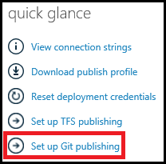
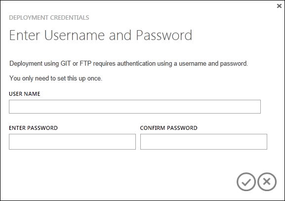
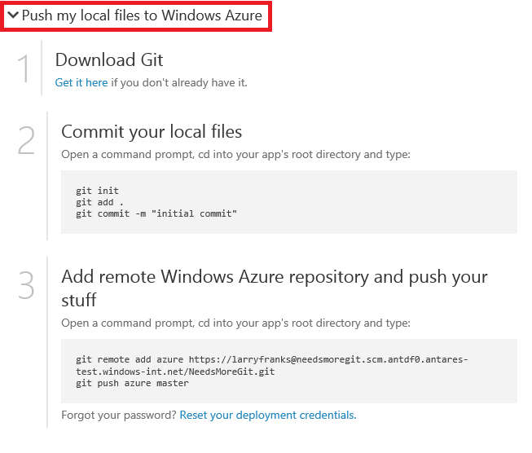

Git is a popular, open source, distributed version control system. Windows Azure Web Sites allow you to enable a Git repository for your site, which allows you to quickly and easily push code changes to your site. In this article, you will learn how to use Git to publish to a Windows Azure Web Site.
Note: Many of the Git commands described in this article can be performed automatically when creating a Web Site using the Windows Azure Command-Line Tools for Mac and Linux. For more information on using the cross-platform tools, see TBD
The task includes the following steps:
- [Install Git] (#Step1)
- [Create a local repository] (#Step2)
- [Add a web page] (#Step3)
- [Enable the web site repository] (#Step4)
- [Add the web site as a remote repository] (#Step5)
- [Publish and re-publish the web site] (#Step6)
- [Troubleshooting] (#Step7)
Installing Git
The steps required to install Git vary between operating systems. See Installing Git for operating system specific distrubtions and installation guidance.
Note: On some operating systems, both a command-line and GUI version of Git will are available. The instructions provided in this article use the command-line version.
Create a local repository
Perform the following tasks to create a new Git repository.
Open a command-line, such as GitBash (Windows) or Bash (Unix Shell). On OS X systems you can access the command-line through the Terminal application.
From the command line, change to the directory in which you will create your web site. For example, cd needsmoregit.
Use the following command to initialize a new Git repository:
git init
This should return a message such as Initialized empty Git repository in [path].
Add a web page
Windows Azure Web Sites support a applications created in a variety of programming languages. For this example, you will use a static .html file. For information on publishing web sites in other programming languages to Windows Azure, see the Windows Azure Developer Center.
Using a text editor, create a new file named index.html in the root of the Git repository. Add 'Hello Git!' as the contents, and then save the file.
From the command-line, make sure you are in the directory that you created the repository in and use the following command to add the index.html file to the repository:
git add index.html
Next, commit the changes to the repository by using the following command:
git commit -m "Adding index.html to the repository"
You should see output similar to the following:
[master (root-commit) 369a79c] Adding index.html to the repository
1 file changed, 1 insertion(+)
create mode 100644 index.html
Enable the web site repository
Perform the following steps to enable a Git repository for your web site by using the Windows Azure portal:
Login to the Windows Azure portal.
On the left of the page, select Web Sites, and then select the web site for which you want to enable a repository. If you have not yet created a web site, see TBD.

At the bottom of the page, select Setup Git publishing.

If this is the first time you have enabled publishing for a Windows Azure Website, you may be prompted for deployment credentials. Enter a username and password, which will be required when publishing to your web sites in the future.

After a short delay, you should be presented with a message that your repository is ready. Below this message, click the Push my local files to Windows Azure for a list of commands that can be used to push your local files to Windows Azure.

Add the web site as a remote repository
Since you have already initialized a local repository and added files to it, skip steps 1 and 2 of the instructions displayed in the portal. Using the command-line, change directories to your web site directory and use the commands listed in step 3 of the instructions returned by the portal. For example:
git remote add azure http://username@needsmoregit.windowsazure.net/NeedsMoreGit.git
The remote command adds a named reference to a remote repository, in this case it creates a reference named 'azure' for your Windows Azure Website repository.
Publish and re-publish the web site
Use the following from the command-line to push the current repository contents from the local repository to the 'azure' remote:
git push azure master
You will be prompted for the password you created earlier when setting up your repository. Enter the password and you should see output similar to the following:
Counting objects: 6, done.
Compressing objects: 100% (2/2), done.
Writing objects: 100% (6/6), 486 bytes, done.
Total 6 (delta 0), reused 0 (delta 0)
remote: New deployment received.
remote: Updating branch 'master'.
remote: Preparing deployment for commit id '369a79c929'.
remote: Preparing files for deployment.
remote: Deployment successful.
To http://username@needsmoregit.windowsauzre.net/NeedsMoreGit.git
* [new branch] master -> master
Note: The repository created for your Windows Azure Website expects push requests to target the master branch of its repository, which will then be used as the content of the web site.
In the portal, click the BROWSE link at the bottom of the portal to verify that the index.html has been deployed. A page containing 'Hello Git!' will appear.

Using a text editor, change the index.html file so that it contains 'Yay!', and then save the file.
Use the following commands from the command-line to add and commit the changes, and then push the changes to the remote repository:
git add index.html
git commit -m "Celebration"
git push azure master
Once the push command has completed, refresh the browser and note that the content of the page now reflects the latest commit change.

Troubleshooting
The following are errors or problems commonly encountered when using Git to publish to a Windows Azure Website:
Symptom: Couldn't resolve host 'hostname'
Cause: This error can occur if the address information entered when creating the 'azure' remote was incorrect.
Resolution: Use the git remote -v command to list all remotes, along with the associated URL. Verify that the URL for the 'azure' remote is correct. If needed, remove and recreate this remote using the correct URL.
Symptom: No refs in common and none specified; doing nothing. Perhaps you should specify a branch such as 'master'.
Cause: This error can occur if you do not specify a branch when performing a git push operation, and have not set the push.default value used by Git.
Resolution: Perform the push operation again, specifying the master branch. For example:
git push azure master
Symptom: src refspec [branchname] does not match any.
Cause: This error can occur if you attempt to push to a branch other than master on the 'azure' remote.
Resolution: erform the push operation again, specifying the master branch. For example:
git push azure master
Symptom: Error - Changes commited to remote repository but your website not updated.
Cause: This error can occur if you are deploying a Node.js application containing a package.json file that specifies additional required modules.
Resolution: Additional messages containing 'npm ERR!' should be logged prior to this error, and can provide additional context on the failure. The following are known causes of this error and the corresponding 'npm ERR!' message:
Additional Resources